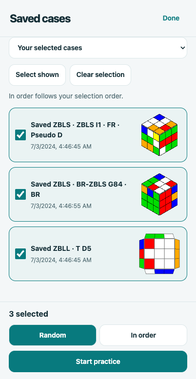
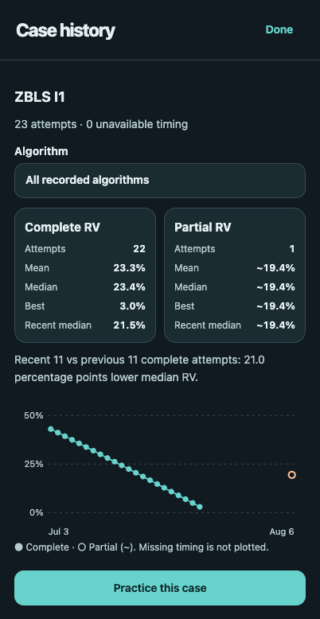

Knowing an algorithm and using it fluently in a solve are different skills. ZB Coach is my app for connecting the two: it follows a GAN smart cube, recognizes last-slot and last-layer cases, and brings the algorithm, move-by-move guidance, and practice history together on my phone.
ZBLS solves the final F2L pair while orienting the last-layer edges. ZBLL then solves that edge-oriented last layer in one algorithm. The app supports both focused case drills and normal solves.
A coach beside the cube
Bluetooth turns update the virtual cube as I solve. The coach uses the calibrated hold to present the case and algorithm in the right orientation, including opening adjustments and the final AUF—the U-layer turn needed to finish alignment.
Completed moves disappear without shifting the remaining letters. If I go off track, Undo instructions lead back to the expected state. The same guidance helps with scrambling, so a practice attempt starts from the intended case rather than an almost-correct setup.
Turn a solve into focused practice
I can select entire algorithm sets or individual cases and practice them in order or in shuffled rounds. Each case gets randomized setups instead of always starting with the same familiar scramble.
More importantly, a saved solve can become its own practice material. Named sessions and folders retain the recorded ZBLS and ZBLL states; selecting one restores that exact case, its slot, and its saved algorithm. This makes it possible to revisit a case from an actual solve without manually reconstructing it.




Development screenshots of the app with sample practice data, shown in light and dark mode.
More than a finishing time
Standard timing and averages of 5, 12, and 100 sit alongside move counts and rhythm variability (RV). Case-level RV describes how uneven the gaps between turns are within an algorithm’s execution. Lower values mean a more even rhythm, not necessarily a faster solve.
The case history separates complete and partial timing data, plots changes over time, and suggests practice priorities from repeated complete attempts. Missing timing is left unavailable rather than filled in as zero. The app also has a custom Solve Score combining move count and rhythm, with a bonus for verified ZBLS followed by ZBLL; it is a training metric, not an official cubing score.
Built for the phone
ZB Coach combines a Swift iPhone app and native CoreBluetooth connection with a customized csTimer-based interface in WKWebView. Algorithms are bundled and cached for offline practice, while community-sheet updates can refresh them online. Solve records and practice history stay on the device unless I choose to export them.
The current development build targets iOS 16 or later. GAN 16 UI is the hardware-tested cube; other GAN models are not yet verified. The app is not currently a public App Store release.
Built on csTimer (GPL-3.0), with algorithm references from Juju’s ZBLL contributors, Brina/masadl’s ZBLS contributors, and J Perm’s PLL reference. ZB Coach is an independent project, not an official GAN or csTimer product.
Related: The Joy of ZBLL and Adjoint ZBLL: Reading the Last Layer Early.